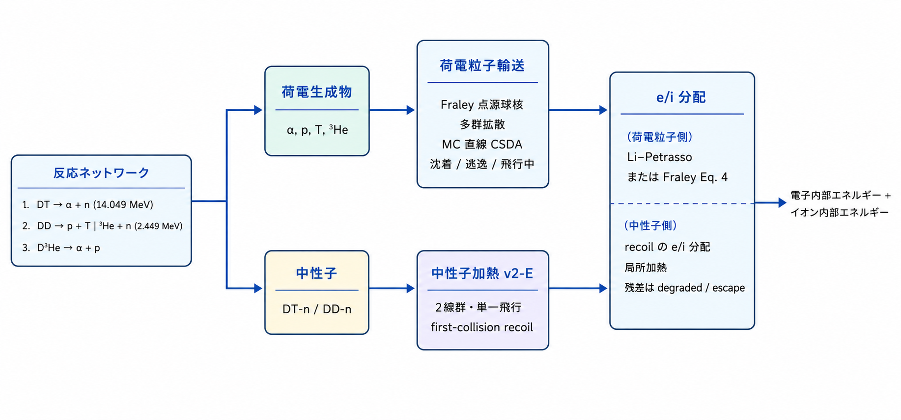

核燃焼 reference
TENRYU の 1D 球対称の燃焼カーネルは、Bosch–Hale による DT・DD・D³He の反応率、燃料の減損、荷電生成物の沈着または輸送、電子とイオンへのエネルギー分配を、ひとつの陽的な源の段階としてまとめて進める。v2 では、遮蔽効果、多群拡散、モンテカルロによる α 粒子輸送、2 本の線スペクトルによる初回衝突の中性子加熱を追加した。
物理機構
燃焼の段階は、核融合の静止質量を高速の荷電生成物と中性子へ変換する。2 温度のラグランジュ計算では、カーネルが Bosch–Hale の反応率係数によるチャネルごとの反応率 \(n_i n_j\langle\sigma v\rangle/(1+\delta_{ij})\) を進め、燃料を減らし、解放されたエネルギーを電子とイオンの加熱源として返す。在庫は、ラグランジュ的な不変量である比在庫 \(Y_s=n_s/\rho\) として保持する。圧縮は \(\rho\) を通してのみ \(n_s\) を変えるため、流体計算が粒子を生成したり消滅させたりすることはない。これにより、生成時の密度を凍結してしまい、膨張するセルを過剰に燃やしてしまう不具合を避けられる。
荷電生成物の輸送が重要なのは、3.5 MeV の α 粒子の飛程が面密度で決まり、そのエネルギーがホットスポットの中に残るか外へ逃げるかで、自己加熱と点火余裕が変わるためである。TENRYU は、意図的に階層をなす 3 つのモデルを用意している。Fraley の点源球は、球幾何における局所の保持率を安価に解析的に求める。多群拡散は Corman のエネルギー格子上で 6 種類の生成物を、統計的なゆらぎなしに減速させる。モンテカルロの連続減速近似は、直線的に進む粒子をステップをまたいで保持する、統計的な参照解である。3 方式はいずれも同じエネルギー台帳へ報告する。
高速のイオンは、エネルギーが高いうちは主にプラズマ中の電子へエネルギーを失い、減速して臨界エネルギー — 電子への損失とイオンへの損失がちょうど等しくなるエネルギー — を下回ると、イオンへの損失が支配的になる。この分配が重要なのは、イオンの加熱が次の燃焼を促す一方、電子の加熱は熱伝導と輻射へ漏れ得るからである。既定の Li–Petrasso の阻止能に基づく分配は、初期化時に \(T_e,T_i,n_e\) の表へ落とし、実行中は補間だけを行う。より単純な Fraley の式 \(f_i=1/(1+32/T_e[\mathrm{keV}])\) は、DT の α 粒子に対してのみ残している。
v2-E の中性子モデルは、燃料中の D/T に対する単一飛行・初回衝突の反跳加熱で、14.049 MeV と 2.449 MeV の離散的な 2 本の線を使う。最初の衝突で平均の反跳エネルギーをその場に付与し、同じ Li–Petrasso の表で電子とイオンへ分配する。2 回目以降の飛行、カーマ（中性子相互作用が単位質量あたりに物質へ放出する運動エネルギー）、(n,2n) 反応、飛行時間、スペクトルの幅は明示的に省いているため、得られる分布は中性子輸送の解ではなく、燃料の自己加熱の近似である。Salpeter の 2 温度形と Chugunov–DeWitt の遮蔽オプションは、低温での反応率係数を変更する。Salpeter の 2 温度化は TENRYU による拡張である。核融合のエネルギーは外部からの静止質量の源として、沈着分・逸出分・飛行中の分に分けて監査する。
反応率と燃料在庫
有効にできるチャネルは DT = T(d,n)⁴He、DD の D(d,p)T と D(d,n)³He、D³He = ³He(d,p)⁴He である。反応率係数には Bosch–Hale (1992) のパデ近似式を使い、セルのイオン温度は入口で一度だけ eV から keV へ変換する。体積あたりの反応率は \(r=n_i n_j\langle\sigma v\rangle/(1+\delta_{ij})\) で、同種粒子どうしの DD には 1/2 が入る。近似式の下端より低温では反応率を 0 とし、上端より高温では上端の値で頭打ちにする。既定の T_floor_keV=0.2 は DT/DD の下端であり、D³He の近似式自体の下端は 0.5 keV である。
fuel_materials は、在庫をもつ、ボイドでない材料の名前を選ぶ。x_D、x_T、x_He3 はその初期モル分率で、3 つの値は非負かつ総和が 1 でなければならない。D、T、³He、⁴He、p の在庫を \(Y_s=n_s/\rho\) として保持し、反応率を評価するときだけ \(n_s=\rho Y_s\) を再構成する。これにより、純ラグランジュ運動のもとで在庫が保存され、膨張するセルで生成時の数密度を凍結してしまう誤りを避けられる。
screening="none" は係数を 1 とし、v1 と同一である。salpeter は電子を含む 2 温度のデバイ長による弱い遮蔽、chugunov_dewitt は剛体の電子背景を仮定した Chugunov–DeWitt 2009 の補間式（文献 [3] の式 (A4)）を使う。前者の 2 温度化は TENRYU による拡張で、入力が正でない場合や有限でない場合は係数 1 へ戻り、弱結合モデルからの逸脱を抑えるために指数を \(h\le2\) に制限する。
- \(r=n_i n_j\langle\sigma v\rangle/(1+\delta_{ij})\) — 単位体積あたりのチャネル反応率で、反応物が同種の場合は \(\delta_{ij}=1\) が DD の 1/2 の因子を与える。
- \(Y_s=n_s/\rho\) — ラグランジュ的な比在庫である。流体的な圧縮・膨張は、\(Y_s\) 自体ではなく \(n_s=\rho Y_s\) を変化させる。
- 温度の単位 — Bosch–Hale の近似式を評価する前に、TENRYU 内部のイオン温度を eV から keV へ一度だけ変換する。
- 近似式の適用範囲 — 下限（DT/DD は 0.2 keV、D³He は 0.5 keV）を下回ると反応率は 0、Bosch–Hale 近似式の適用上限 [1]（DT と DD 両分岐は 100 keV、D³He は 190 keV）を超えると頭打ちにする。
T_floor_keVの既定値は 0.2 である。 - 遮蔽 — 選択した係数を、反応する対ごとの反応率係数へ掛ける。Salpeter は不正な入力に対して 1 へ戻り、弱結合モデルの指数 \(h\)（遮蔽による増幅は \(e^h\)）を \(h\le2\) に制限する。
- Fraley の保持率 — 点源球のカーネルが、燃料球の面密度と生成物の発生半径から局所の保持率を求める。
- \(f_i=1/(1+32/T_e[\mathrm{keV}])\) — 任意選択の Fraley による電子・イオン分配で、設定検証により DT の α 粒子に限定される。
燃料の減損と陽的な時間制御
燃焼の各段階では温度と密度を凍結し、核種のネットワークを陽的中点法（2 次ルンゲ–クッタ）でセルごとに部分サイクルする。必要な分割数は、有効な各反応物について総生成率と総消費率の大きい方から求め、部分ステップあたりの相対的な在庫変化が eps_deplete 以下になるようにする。これにより、DD が作った微量の T を DT がただちに消費するような、正味の変化が小さい生成消費の回転も解像できる。正値性は、反応回数を決定論的に縮小することで守る。
必要な分割数が subcycle_max を超える場合は、上限のまま現在のステップを進めたうえで必要数を報告し、次のステップの燃焼の時間刻みへ \(0.9\,dt\,M_{max}/M_{req}\) を反映させる（\(M_{req}\) は要求された分割数、\(M_{max}\) は subcycle_max の上限）。さらに沈着パワー \(P_{dep}\) に対して \(\Delta t\le f_E e_{cell}/P_{dep}\)、\(f_E=\)explicit_source_limit を課す。ここで \(e_{cell}=\rho_cV_c(e_e+e_i)\) はセルの全内部エネルギーで、ホット電子カーネルの同名キーと同じ制限構成（あちらは電子エネルギー、こちらは電子+イオン）である。これは、段階の内部で温度を更新し直すことなく自己加熱を小さく保つための、源に対する制限である。
1 回の燃焼段階：ステップごとの流れ
- 燃焼の段階のあいだ、各セルの密度と電子・イオン温度を凍結する。
- 有効なチャネルの反応率と、2 次ルンゲ–クッタに必要な部分サイクル数を、各反応物の総生成率と総消費率から求め、部分ステップあたりの相対的な在庫変化を
eps_deplete未満に抑える。正味の変化ではなく総量を使うことで、微量の T が DD で生成され DT で消費される回転を解像できる。 - 5 核種のネットワークを陽的中点法で進める。提案された反応回数が反応物を使い切ってしまう場合は、在庫を再構成する前に回数を決定論的に縮小し、正値性と化学量論の収支を保つ。
- 必要な分割数が
subcycle_maxに張り付いた場合は報告し、\(0.9\,dt\,M_{max}/M_{req}\) を次の燃焼の時間刻みの制限へ反映させる。これとは独立に、沈着する源のパワーに対して \(\Delta t\le f_E e_{cell}/P_{dep}\) を課す。 - 荷電生成物を、選択した
fraley、diffusion、mcのいずれかの方式へ渡し、中性子は任意選択の初回衝突加熱の経路へ渡す。 - 沈着したエネルギーを電子とイオンの源へ分配し、沈着・逸出・飛行中の各台帳を更新して、まとめた燃焼の時間刻み制限をドライバへ渡す。
生成物の輸送と電子・イオン分配
既定の scheme="fraley" は、Fraley による α 粒子の飛程の近似式と、点源球の核を使う。燃料球の面密度と生成半径から局所の保持率を求め、保持された分を発生したセルへ、残りを荷電粒子の逸出台帳へ送る。scheme="diffusion" は Corman 1975 の多群方程式により、6 種類の生成物 — チャネル別の荷電生成物である DT の α、DD の陽子・三重陽子・ヘリオン、D³He の陽子と α — について飛行中の比スペクトルを追跡し、群間の減速で失うエネルギーを沈着させる。scheme="mc" は、直線的に進む連続減速近似の粒子をステップをまたいで保持し、生成物・セル・ステップあたり mc_particles_per_cell 個を標本化する。モンテカルロの集計は統計的だが、各粒子のカウンタ型 Philox 乱数列（Philox4x32-10）は大域 ID によって独立に決まる。
局所沈着に対する既定の分配 partition="li_petrasso" は、初期化時に Li–Petrasso の阻止能を \(T_e,T_i,n_e\) の表へ凍結し、実行中は補間だけを行う。もう一方の fraley は \(f_i=1/(1+32/T_e[\mathrm{keV}])\) で DT の α 粒子に限られ、DD や D³He との併用は拒否される。多群拡散は群内の阻止能の積分に分配を含んでいるため、このキーを使わない。

中性子加熱 v2-E
neutron_heating=True にすると、DT の 14.049 MeV と DD の 2.449 MeV の中性子を等方に放出し、neutron_heating_n_mu 点のガウス–ルジャンドル求積で球殻を横切る弦をたどる。減衰は燃料中の D/T による弾性散乱断面積だけから求め、最初の衝突で平均の反跳エネルギーをそのセルへ局所的に沈着させる。反跳した D/T の電子・イオンへの分配には、Li–Petrasso の表を再利用する。散乱後に残る中性子のエネルギーは degraded（減速後）、外面から出る分は escaped（逸出）として記帳する。
この第 1 段階のモデルは単一飛行である。減速した中性子の多重飛行、シェル材料のカーマ、(n,2n) 分裂、飛行時間による遅れ、反跳スペクトルの幅は含まない。したがって中性子加熱の空間分布を解釈する際は、燃料の自己加熱に対する初回衝突の近似として扱うこと。
namelist による制御
以下は最上位の Burn ブロックの主要キーである。検証規則の全体は namelist リファレンスを参照のこと。
| キー | 既定値 | 用途 |
|---|---|---|
enabled | False | 燃焼全体の有効化スイッチ。1D では球面幾何が必須、2D RZ では scheme="local"/"diffusion" のみ有効である。 |
fuels | ["DT","DD"] | DT、DD、D3He から反応チャネルを選択。 |
scheme | "fraley" | 荷電生成物の輸送方式。1D は fraley、diffusion、mc、2D RZ は local、diffusion。 |
screening | "none" | none、salpeter、chugunov_dewitt。 |
fuel_materials | ["DT"] | 初期の燃料在庫をもつ材料の名前。 |
x_D / x_T / x_He3 | 0.5 / 0.5 / 0.0 | 初期のモル分率。非負で、総和は 1。 |
T_floor_keV | 0.2 | 反応率を評価する際の温度の下限 [keV]。 |
partition | "li_petrasso" | 局所沈着の電子・イオン分配。もう一方の fraley は DT の α 粒子専用である。 |
eps_deplete / subcycle_max | 0.1 / 64 | 部分ステップあたりの在庫変化の目標と、分割数の上限。 |
explicit_source_limit | 0.2 | 沈着エネルギーによる陽的な時間刻み制限の係数。 |
diffusion_groups / diffusion_E_min_keV | 30 / 20.0 | 荷電粒子拡散の群数と、群格子の下端：これを下回るまで減速した生成物は、残りのエネルギーをその場に付与する。既定の 20 keV は MeV 級の生成エネルギーよりはるかに低く、かつ \(T_i\) よりはるかに高い、残余飛程が無視できる位置に置かれている。 |
mc_particles_per_cell | 16 | モンテカルロの、生成物・セル・ステップあたりの標本数。 |
neutron_heating | False | 2 本の線スペクトルによる初回衝突の中性子加熱。 |
neutron_heating_n_mu | 16 | 等方放出の弦に対する、偶数次の μ 求積の次数。 |
検証
- G-R0 は、Bosch–Hale の Table VIII にある 8 温度 × 4 反応の基準値を相対 \(1.5\times10^{-3}\) 以内で固定し、keV と eV の取り違えを検出する。G-R1 系は、閉じた形の DT/DD 解、生成された T を含む連鎖反応、総量に基づく部分サイクル、化学量論的な反応回数を検査する。
- G-K0/K1/K2 は Fraley の飛程、点源の核、球平均の閉じた形の解を検査し、G-P1/P2 は Li–Petrasso の公刊済み阻止能参照値（文献 [5] の Table I）と、意図的に異なる値をとる Fraley の分配を検査する。6 回の実行からなる第 2 段のマイクロスフィア検査は、燃料対の上限、反応率のスケール、初期の α 粒子の再捕獲による自己加熱を組み合わせる。
- 機能を無効にした実行と基準の実行との A/B 対比較では、場が 53/53、履歴が 164/164 でビット単位に一致し、GXII の基準解でも相対差 0 を 6 回確認した。G-L1 と v2 の各輸送検査は、「解放 = 沈着 + 逸出 + 飛行中の変化」という台帳の恒等式を、丸め誤差の範囲で課す。
- 中性子の v2-E は、定数表、光学的に薄い極限、球に対する解析的な減衰、「放出 = 沈着 + 減速後 + 逸出」を判定する。モンテカルロについては、同じ種での変動係数 0.1% 以下、異なる種での変動係数 5% 以下と、乱数列の独立性を別途検査する。
参考文献
- H. S. Bosch and G. M. Hale, "Improved Formulas for Fusion Cross-Sections and Thermal Reactivities," Nucl. Fusion 32, 611–631 (1992). doi:10.1088/0029-5515/32/4/I07
- E. E. Salpeter, "Electron Screening and Thermonuclear Reactions," Aust. J. Phys. 7, 373–388 (1954). doi:10.1071/PH540373
- A. I. Chugunov and H. E. DeWitt, "Nuclear Fusion Reaction Rates for Strongly Coupled Ionic Mixtures," Phys. Rev. C 80, 014611 (2009). doi:10.1103/PhysRevC.80.014611
- G. S. Fraley, E. J. Linnebur, R. J. Mason, and R. L. Morse, "Thermonuclear Burn Characteristics of Compressed Deuterium-Tritium Microspheres," Phys. Fluids 17, 474–489 (1974). doi:10.1063/1.1694739
- C.-K. Li and R. D. Petrasso, "Charged-Particle Stopping Powers in Inertial Confinement Fusion Plasmas," Phys. Rev. Lett. 70, 3059–3062 (1993). doi:10.1103/PhysRevLett.70.3059
- E. G. Corman, W. E. Loewe, G. W. Cooper, and A. M. Winslow, "Multi-Group Diffusion of Energetic Charged Particles," Nucl. Fusion 15, 377–386 (1975). doi:10.1088/0029-5515/15/3/003
- H. Brysk, "Fusion Neutron Energies and Spectra," Plasma Phys. 15, 611–617 (1973). doi:10.1088/0032-1028/15/7/001
- J. Yuan, G. A. Moses, and P. W. McKenty, "Monte Carlo Charged-Particle Tracking and Energy Deposition on a Lagrangian Mesh," Phys. Rev. E 72, 046706 (2005). doi:10.1103/PhysRevE.72.046706